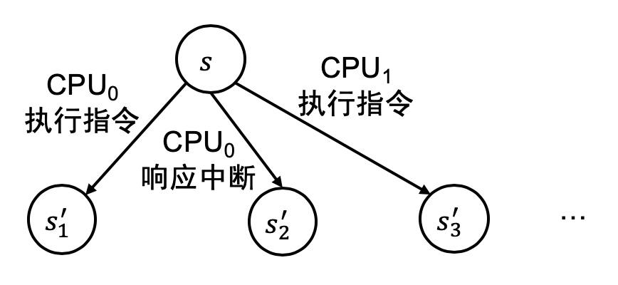

并发控制：互斥 (2)
本讲阅读材料
本讲阅读材料为本讲义。请大家下载 xv6 的代码，并参考课堂录像进行调试。
1. 解决自旋造成的浪费
1.1. 自旋锁和浪费问题
自旋锁在获得锁失败之后有一个 “轮询” 的循环：
while (xchg(&locked, 1)) {
// 获得锁失败，需要再次尝试
}
带来大麻烦的是，我们的一个 CPU 上运行的线程并不只有一个——系统里可以有数千、数万甚至更多的线程，它们在中断的驱动下共享一个 CPU。这就造成大麻烦了：假设一个线程在获得自旋锁以后被中断，切换到另外一个线程执行 (假设这个线程也需要获得同一个自旋锁)，并且其他处理器上的线程也需要获得同一个自旋锁——我们就出现了 “持有锁的线程在睡觉、没有锁的线程在 CPU 上围观” 的尴尬场面。如果持有锁的线程在等待长时间的操作 (例如 I/O)，浪费如此多宝贵的 CPU 资源完全是难以接受的。
1.2. 互斥锁
如何解决这个问题呢？请大家阅读教科书 28.14 到章节末尾的内容。
2. 操作系统中的互斥
如何在操作系统内核中实现互斥呢？让我们首先回顾一下什么是 “操作系统内核”。在这里，AbstractMachine 文档应该对大家很有帮助。在接下来的部分，我们假设你已经在 Lab0 中熟悉了 “为 bare-metal 编程” 的基本概念。
2.1. 计算机硬件系统的状态机模型
实际上，bare-metal 上的操作系统和操作系统上的程序一样，可以看成是状态机。在课堂上，我们反复演示 (和强调) 并发程序的多个线程拥有独立的寄存器、堆栈 (但不同线程的堆栈位于同一个地址空间中，我们已经在课堂上展示过)，共享代码和数据。并发程序中有一份共享的内存，但每个线程都有独立的寄存器。因此假设系统中有 $n$ 个线程，那么状态看起来就是$$(M, R_1, R_2, \ldots, R_n).$$
而实际上，计算机系统本身完全也可以看成状态机。这个概念对学习过《计算机系统基础》的同学来说应该一点也不陌生——我们的计算机完全可以看成是一个数字电路，类似于大家在《数字逻辑电路》课程中学习/实验过的 “计数器”，而在《计算机系统基础》实验中，我们编写了一个 “数字电路模拟器”。
2.1.1. “计算机系统” 的状态
使用 QEMU 模拟器的 monitor，我们可以查看 x86 处理器上所有寄存器的状态——注意很多寄存器在进程的角度是不可见的，有些部分即便进程可见，但不能修改 (例如进程执行 cli 指令试图清除 %eflags 中的 FL_IF 将会导致 segmentation fault)。
接下来，我们用一组选项启动 QEMU:
-nographic不启动图形界面 (所以做操作系统实验其实并不需要任何图形界面……)-S使 QEMU 在 CPU Reset 之后暂停不再执行指令
然后，我们按 info registers:
(qemu) info registers
EAX=00000000 EBX=00000000 ECX=00000000 EDX=00000663
ESI=00000000 EDI=00000000 EBP=00000000 ESP=00000000
EIP=0000fff0 EFL=00000002 [-------] CPL=0 II=0 A20=1 SMM=0 HLT=0
ES =0000 00000000 0000ffff 00009300
CS =f000 ffff0000 0000ffff 00009b00
SS =0000 00000000 0000ffff 00009300
DS =0000 00000000 0000ffff 00009300
FS =0000 00000000 0000ffff 00009300
GS =0000 00000000 0000ffff 00009300
LDT=0000 00000000 0000ffff 00008200
TR =0000 00000000 0000ffff 00008b00
GDT= 00000000 0000ffff
IDT= 00000000 0000ffff
CR0=60000010 CR2=00000000 CR3=00000000 CR4=00000000
DR0=0000000000000000 DR1=0000000000000000 DR2=0000000000000000 DR3=0000000000000000
DR6=00000000ffff0ff0 DR7=0000000000000400
EFER=0000000000000000
FCW=037f FSW=0000 [ST=0] FTW=00 MXCSR=00001f80
FPR0=0000000000000000 0000 FPR1=0000000000000000 0000
FPR2=0000000000000000 0000 FPR3=0000000000000000 0000
FPR4=0000000000000000 0000 FPR5=0000000000000000 0000
FPR6=0000000000000000 0000 FPR7=0000000000000000 0000
XMM00=00000000000000000000000000000000 XMM01=00000000000000000000000000000000
XMM02=00000000000000000000000000000000 XMM03=00000000000000000000000000000000
XMM04=00000000000000000000000000000000 XMM05=00000000000000000000000000000000
XMM06=00000000000000000000000000000000 XMM07=00000000000000000000000000000000
此时系统处于 16-bit 模式 (CR0 = 60000010)，并且能看到 32-bit 模式下的一些寄存器。寄存器的初始值已按照手册的要求初始化 (例如 CS:IP = 0xffff0)。这就是 QEMU 眼中 “计算机系统” 除了内存部分以外的状态。如果我们调试进入 64-bit 模式以后的代码，QEMU 可见的寄存器也发生了变化：
RAX=00000000000048af RBX=0000000000103520 RCX=0000000000000001 RDX=00000000000003f8
RSI=0000000000000001 RDI=0000000000000000 RBP=0000000000103527 RSP=0000000000106f30
R8 =0000000000000000 R9 =0000000000000000 R10=0000000000000000 R11=0000000000000000
R12=0000000000000000 R13=0000000000000000 R14=0000000000000000 R15=0000000000000000
RIP=00000000001001d0 RFL=00000283 [--S---C] CPL=0 II=0 A20=1 SMM=0 HLT=0
ES =0000 0000000000000000 00000000 00000000
CS =0008 0000000000000000 00000000 00209a00 DPL=0 CS64 [-R-]
SS =0000 0000000000000000 ffffffff 00c09300 DPL=0 DS [-WA]
DS =0000 0000000000000000 00000000 00000000
FS =0000 0000000000000000 00000000 00000000
GS =0000 0000000000000000 00000000 00000000
LDT=0000 0000000000000000 0000ffff 00008200 DPL=0 LDT
TR =0028 0000000000108060 00000067 00408900 DPL=0 TSS64-avl
GDT= 0000000000108028 00000038
IDT= 0000000000106fc0 00001000
CR0=80000011 CR2=0000000000000000 CR3=0000000000001000 CR4=00000020
DR0=0000000000000000 DR1=0000000000000000 DR2=0000000000000000 DR3=0000000000000000
DR6=00000000ffff0ff0 DR7=0000000000000400
EFER=0000000000000500
FCW=037f FSW=0000 [ST=0] FTW=00 MXCSR=00001f80
FPR0=0000000000000000 0000 FPR1=0000000000000000 0000
FPR2=0000000000000000 0000 FPR3=0000000000000000 0000
FPR4=0000000000000000 0000 FPR5=0000000000000000 0000
FPR6=0000000000000000 0000 FPR7=0000000000000000 0000
XMM00=00000000000000000000000000000000 XMM01=00000000000000000000000000000000
XMM02=00000000000000000000000000000000 XMM03=00000000000000000000000000000000
XMM04=00000000000000000000000000000000 XMM05=00000000000000000000000000000000
XMM06=00000000000000000000000000000000 XMM07=00000000000000000000000000000000
XMM08=00000000000000000000000000000000 XMM09=00000000000000000000000000000000
XMM10=00000000000000000000000000000000 XMM11=00000000000000000000000000000000
XMM12=00000000000000000000000000000000 XMM13=00000000000000000000000000000000
XMM14=00000000000000000000000000000000 XMM15=00000000000000000000000000000000
大家不必理解它们的含义，只需知道系统寄存器比 gdb 调试进程时可见的寄存器少得多——操作系统上的进程无权访问其中相当的一部分。假设当前计算机系统的状态是 $(M, SR)$ ($SR$ 是系统中所有的寄存器)。对于一个单处理器系统，它的行为就是按照手册取指令 → 译码 → 执行 → 写回寄存器/内存的状态，得到指令执行完成后的状态 $(M', SR')$，如此往复——计算机系统就可以看成是一个状态机。
2.1.2. “计算机系统” 作为状态机的执行
和操作系统进程中的线程一样，计算机系统可以有多个共享内存的处理器，每个处理器都有一份独立的寄存器现场 (包括刚才看到的所有寄存器现场！)。系统中的处理器可以并行执行，也如同进程中的线程一样。从状态机的角度，某一时刻系统的状态处于 $(M, SR_1, SR_2, \ldots, SR_n)$，那么我们可以 “选择一个处理器” $i$ 执行，即把当前的计算机系统看成是 $(M, SR_i)$，执行一条指令得到 $(M', SR_i')$，将此时系统的状态更新为 $$(M, SR_1, SR_2, \ldots, SR_i', SR_{i+1}, \ldots, SR_n).$$
Simultaneous Multi-Threading (SMT)
在我们能购买到的处理器中，经常能见到核心数与线程数不同，例如 24C/48T 的处理器。此时的 “线程” 主要就是指寄存器现场。24C/48T 的处理器将有 48 份独立的寄存器 (和相应的代码执行电路)，但诸如运算器、L1 缓存等，都只有 24 份。
在运算器/缓存对一个寄存器现场来说显得有些富余时，让两个线程 (寄存器现场) 共享它们就有意义了——在同一个核心上的两个线程中，其中一个发生 cache miss 时，另一个线程依然可以继续使用核心中的资源执行。因此，在操作系统看来，48 个线程就像是 48 个逻辑处理器，因此在
/proc/cpuinfo中，24C/48T 的处理器将看到 48 个逻辑 CPU。在为多处理器吞吐量优化的场景下，一个物理核心可能拥有更多数量的线程。例如 IBM Power 8 使用了 12 核心 96 线程的设计 (每个核心 8 线程，每个核心有 16 个指令执行流水线)。
除了可以 “选择一个 CPU 执行一条指令”，与操作系统上的进程不同，计算机系统是所有硬件中断的管理者 (操作系统上的进程无法直接看到中断)。在 x86-64 系统上，当 %rflags 的 FL_IF bit 为 1 时，处理器在外部中断到来后，会执行以下 (简化的) 流程：
- 如果运行在 ring 3，切换到 TSS 中预设的堆栈地址 (
%ss, %rsp)； - 将中断前的若干寄存器保存到堆栈上：
%ss, %rsp, %cs, %rip, %rflags； - 跳转到 IDT 中指定的入口地址执行。
AbstractMachine 对中断的底层行为进行了封装，在中断到来后会寄存器现场 (Context) 到堆栈上，最后调用注册的 callback (这里建议你再次阅读 AbstractMachine 文档)。在用状态机模型分析直接运行在计算机硬件上的程序 (例如操作系统) 时要格外小心，因为多处理器系统的状态机模型上，状态机的每一步都有很大的不确定性：
- 可以选择系统中任意一个处理器执行一条指令；
- 任意一个处理器在中断打开时都可以响应系统中的中断。

用调试器理解状态机模型
在课堂上，我们介绍过使用 gdb 的
set scheduler-locking on可以在暂停其他线程执行的前提下进行单步调试。在此情形下调试 xv6，并使用 QEMU monitor 查看单步执行前后系统寄存器的值，能使你更好地理解 (和适应) “计算机系统是状态机” 的概念。
2.2. 在操作系统中实现互斥
我们当然可以简单地把之前学习的自旋锁实现搬到操作系统内核中——因为 xchg 指令的原子性，只有获得 “钥匙” 的线程才能进入临界区执行：
int locked = 0;
void lock() { while (atomic_xchg(&locked, 1)); }
void unlock() { atomic_xchg(&locked, 0); }
带着刚才我们对 “计算机系统是状态机” 的理解，你很快就会想到，实现操作系统上互斥的主要难题在于系统中可能发生中断——在 thread-os.c 中，操作系统会在中断的驱动下在线程之间切换执行。这就带来了和操作系统上的自旋锁同样的问题：
但这次没有 syscall 指令可以帮助我们了——作为 “计算机系统” 的状态机就
2.2.1. 单处理器：关中断 = Stop the World
为了实现互斥，我们不妨考虑简单一点的情况——我们只有一个处理器。这时候没有多处理器造成的不确定性，既然罪魁祸首是中断驱动的上下文切换，不如我们直接关中断了事——关闭中断以后，就不可能再发生上下文切换，整个处理器就和当前执行的线程绑定了 (当然，如果线程死循环，操作系统也直接卡死了。大家可以参考 xv6 的 panic: 处理器在关闭中断后就进入死循环)：
void lock(lock_t *lk) {
cli();
}
void unlock(lock_t *lk) {
sti();
}
没错，关闭中断就相当于单处理器上的 stop the world，实际上，在老旧的操作系统书上，关中断就是实现互斥的基本方法 (而不是原子指令)。
思考题：何时开中断？
lock(&lk1); lock(&lk2); unlock(&lk2); // 1 unlock(&lk1); // 2在什么时候开中断？请大家结合 xv6 的代码回答这个问题。
2.2.2. 多处理器：Stop the World + 自旋
我们把关中断和自旋结合起来，就能得到多处理器系统适用的方案了：
void lock(lock_t *lk) {
cli();
while (atomic_xchg(&lk->locked, 1)) ;
}
void unlock(lock_t *lk) {
atomic_xchg(&lk->locked, 0);
sti();
}
思考题：操作顺序
先
cli还是先自旋？先释放锁还是先sti？注意我们必须保证在获得锁期间处理器不会被中断。在cli()返回前的任意时刻，处理器都会被中断；在sti()后的一瞬间，处理器也可能被中断。
大家不妨考虑一下这个算法的正确性，并用状态机证明，这里的状态并不多——你只需要假设中断会切换到其他线程执行即可 (也可以用状态机来分析应该先关中断还是先自旋)。在世界上只有一把锁的情况下，算法是没问题的。不过现实世界对锁的使用，要稍微考虑复杂一些的情形：
void case1() {
assert((read_eflags() & FL_IF) == 0);
lock(&lk):
unlock(&lk);
assert((read_eflags() & FL_IF) == 0);
// 上锁/解锁前后IF标志位不变，不得随意打开中断
}
void case2() {
assert((read_eflags() & FL_IF) != 0); // 初始时中断打开
lock(&lk1);
lock(&lk2);
unlock(&lk2);
assert((read_eflags() & FL_IF) == 0); // 持有锁时不得开中断
unlock(&lk1);
assert((read_eflags() & FL_IF) != 0); // 在释放所有锁后开中断
}
善用断言 (assertions)
断言描述了你预期必定会发生的事，即你对实现应该满足规约 (specification) 的理解。没错，断言就是一句 “废话”。那废话有什么用呢？当然有用了！因为你的代码会有 bug。断言成立的前提是程序符合规约，但通常大家的程序是不可能轻易符合规约的 (笑，因此这些看起来没用的断言，能帮助大家迅速定位到问题所在。
在并发编程中，这些断言更显得可贵——例如在某个例子里，你只在几条指令的执行过程中错误地 (case 2) 打开了中断。因此，想要暴露这个问题的可能性是微乎其微的，但断言却能帮助你以 100% 的概率捕获这个问题。
xv6 的 spinlock 实现是这方面的典范。这也是我们强烈推荐 xv6 代码的原因。
为了修复上述两个 case，我们可以把 lock 和 unlock 想象成是入栈和出栈的过程——lock 时，把 eflags 压入堆栈中，然后关闭中断；unlock 时，从栈中恢复出 eflags 的数值。不过这里仍然有一个问题：
谁维护这个堆栈？
线程 or 锁 or 处理器？分别考虑这三种情况。以及，我们并不需要真正维护一个堆栈——因为第一次 lock 之后，到与之配对的 unlock 之前，中断始终处于关闭状态。
在你把这一切都想清楚以后，欣赏并调试一下 xv6 的 spinlock.c 吧！
3. 操作系统内核中的睡眠等待
根据刚才的分析，自旋锁会
与此同时，自旋锁带来的另一个问题是